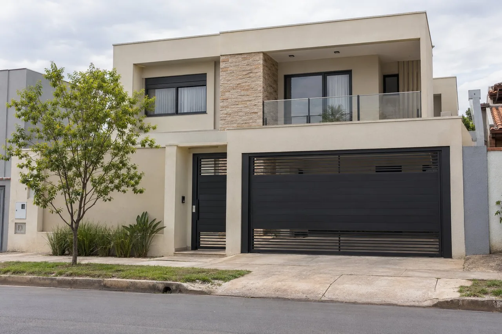
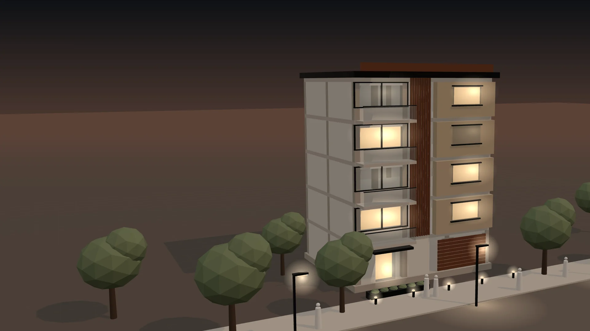
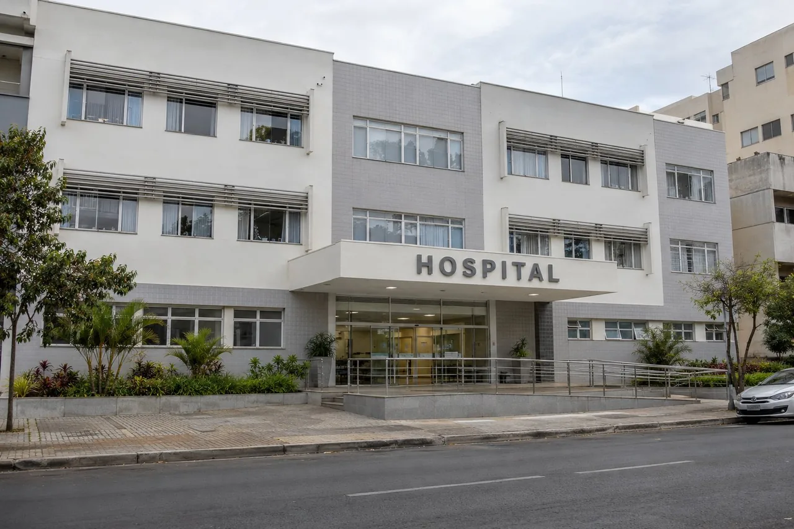
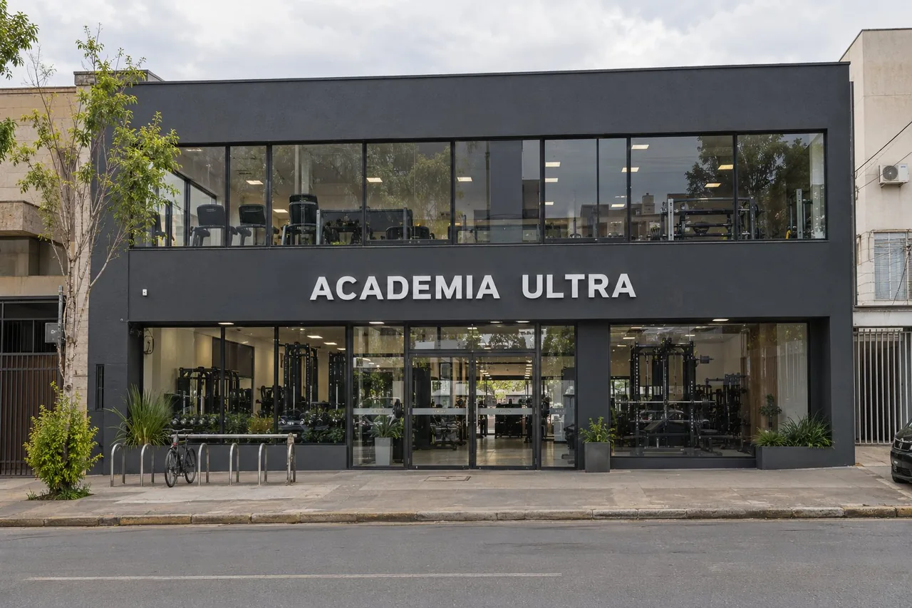
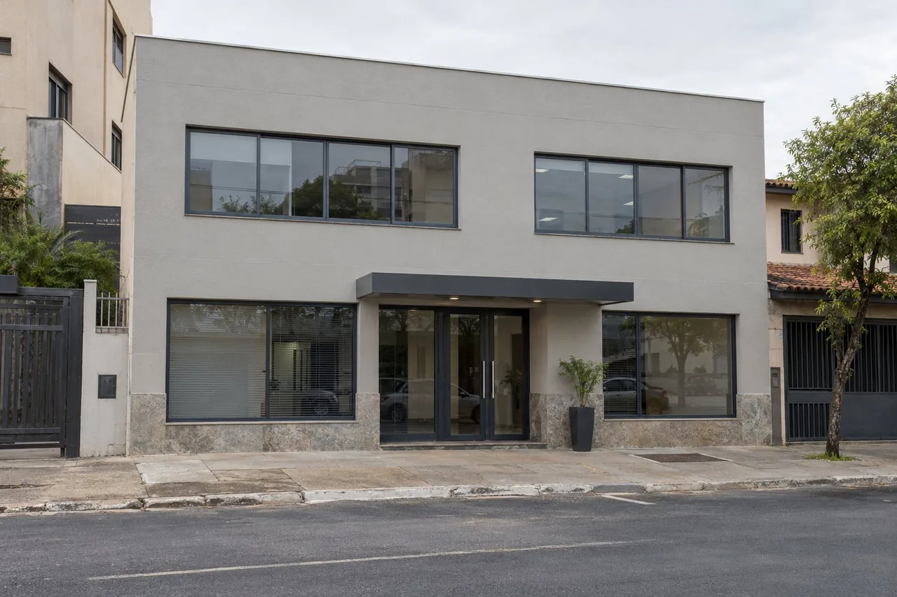
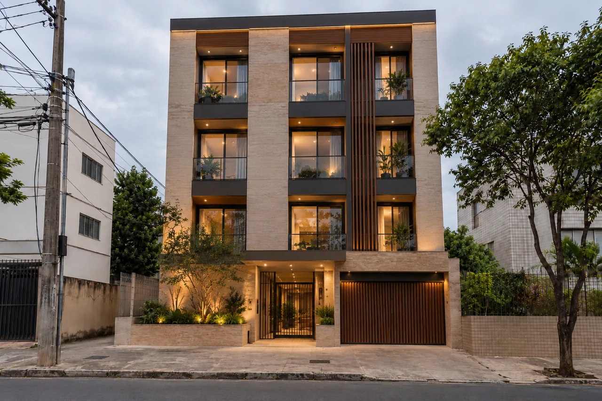
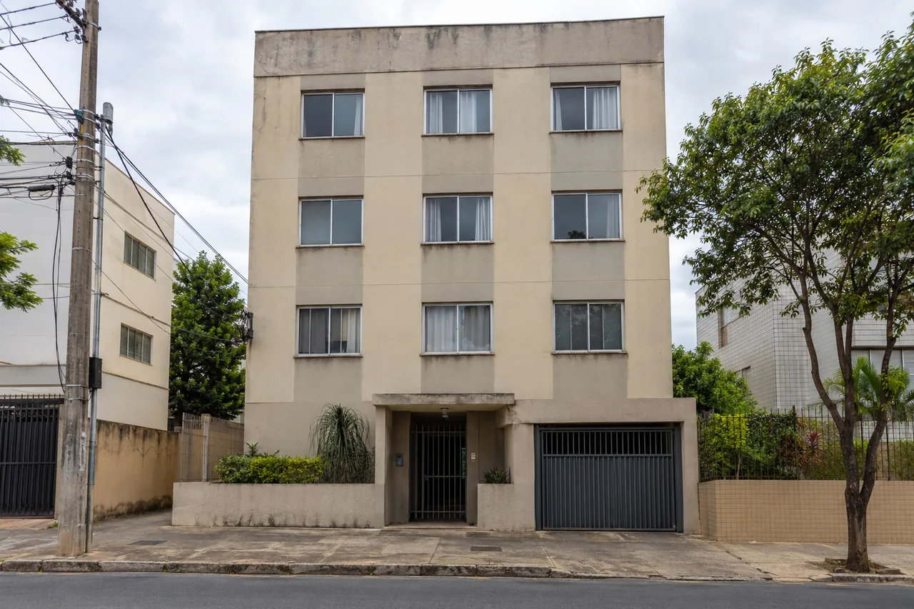

Residencial Ilustração · IA
Entre luz e matéria
Um estudo de volumes, luz e materiais naturais na fachada residencial.

Engenharia & Construções
Role a página e veja uma obra sair do papel. No fim, gire a maquete, veja de dia ou à noite e abra os pavimentos.
Maquete 3D ilustrativa
Maquete 3D ilustrativa: mostra as etapas de uma obra, não um projeto real da VIA OPUS.
Cada imagem nasce de um traço e é assentada tijolo por tijolo. Passe o cursor para ver o desenho por trás da fachada.
Estudos visuais gerados por IA. Não representam obras realizadas; registros reais entram aqui após autorização.

Residencial Ilustração · IA
Um estudo de volumes, luz e materiais naturais na fachada residencial.

Saúde Ilustração · IA
Uma leitura conceitual da entrada e da composição de uma unidade de saúde.

Academias Ilustração · IA
Estudo visual para a ACADEMIA ULTRA. Fachada e letreiro ilustrativos; não é o logotipo oficial.

Reformas Ilustração · IA
Um estudo de renovação de fachada, com revestimentos claros e esquadrias grafite.
Arraste a linha para comparar. Este é um demonstrativo com imagens ilustrativas: quando houver reformas reais autorizadas, as fotos de antes e depois entram aqui.


Três passos simples, sem compromisso.
Você conta o que precisa pelo WhatsApp da Rafaela.
Combinamos uma visita técnica ao local.
O orçamento é feito depois da conversa e da visita técnica.
A VIA OPUS nasceu da parceria entre Fernando Taveira e a arquiteta Rafaela Lacerda. Experiência na construção e criatividade reunidas em uma mesma empresa.
Construção civil
Há mais de 30 anos, Fernando Taveira constrói uma trajetória movida pela paixão de transformar projetos em realidade. Na construção civil, encontrou seu propósito: criar espaços que acolhem vidas e novas histórias.
Arquitetura
Arquiteta, Rafaela Lacerda reúne mais de 10 anos de experiência entre projetos e obras. Nesse caminho, aprendeu que um bom projeto não termina no desenho: só se completa quando funciona na obra e acolhe a rotina de quem vai viver ou trabalhar no espaço. É com esse olhar, atento aos detalhes e sensível às pessoas, que conduz cada conversa na VIA OPUS, do primeiro contato ao resultado final.
Uma parceria que une a força de construir à sensibilidade de projetar, dando forma a lugares onde o futuro acontece.
Juntos, atuam no Distrito Federal, em Goiás e no Entorno, com atenção aos detalhes e respeito por quem confia em seu trabalho.
Conte o que você precisa. O atendimento é feito pela Rafaela, pelo WhatsApp.
Fale com a Rafaela
Rafaela Lacerda Arquiteta
WhatsApp: (61) 8518-9004
Falar com a Rafaela no WhatsAppO orçamento é feito após uma conversa e uma visita técnica. Todo contato segue para a Rafaela Lacerda.
Ou monte sua mensagem
Responda em 4 toques. Nada é enviado por este site: a mensagem só abre no seu WhatsApp para você revisar.
Que tipo de espaço?
Onde fica?
Tamanho aproximado
Quando pretende começar?
Sua mensagem
Escolha as opções acima para montar a mensagem.
Maquete 3D ilustrativa ao anoitecer